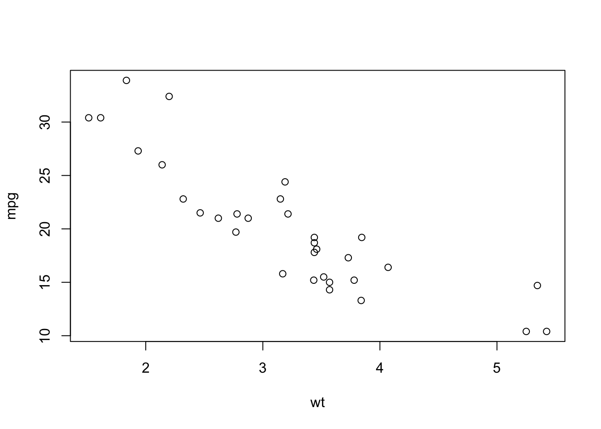

Chapter 2 Data Frame Details
R comes with with a variety of built-in data sets that are very useful for getting used to data sets and how to manipulate them.
AirPassengers Monthly Airline Passenger Numbers 1949-1960
BJsales Sales Data with Leading Indicator
BOD Biochemical Oxygen Demand
CO2 Carbon Dioxide Uptake in Grass Plants
ChickWeight Weight versus age of chicks on different diets
DNase Elisa assay of DNase
Formaldehyde Determination of Formaldehyde
HairEyeColor Hair and Eye Color of Statistics Students
Harman23.cor Harman Example 2.3
Harman74.cor Harman Example 7.4
Indometh Pharmacokinetics of Indomethacin
InsectSprays Effectiveness of Insect Sprays
JohnsonJohnson Quarterly Earnings per Johnson & Johnson Share
LakeHuron Level of Lake Huron 1875-1972
LifeCycleSavings Intercountry Life-Cycle Savings Data
Loblolly Growth of Loblolly pine trees
Nile Flow of the River Nile
Orange Growth of Orange Trees
OrchardSprays Potency of Orchard Sprays
PlantGrowth Results from an Experiment on Plant Growth
Puromycin Reaction Velocity of an Enzymatic Reaction
Theoph Pharmacokinetics of Theophylline2.1 An Example
Data frames look like an Excel Spreadsheet. The rows are observations and the columns are variables or “features” that represent some measurement or character-based description of a given observation. When viewed from the row point of view, the data can be heterogenous. When viewed as a column, the data is homogenous.
data(mtcars)
mtcars## mpg cyl disp hp drat wt qsec vs am gear carb
## Mazda RX4 21.0 6 160.0 110 3.90 2.620 16.46 0 1 4 4
## Mazda RX4 Wag 21.0 6 160.0 110 3.90 2.875 17.02 0 1 4 4
## Datsun 710 22.8 4 108.0 93 3.85 2.320 18.61 1 1 4 1
## Hornet 4 Drive 21.4 6 258.0 110 3.08 3.215 19.44 1 0 3 1
## Hornet Sportabout 18.7 8 360.0 175 3.15 3.440 17.02 0 0 3 2
## Valiant 18.1 6 225.0 105 2.76 3.460 20.22 1 0 3 1
## Duster 360 14.3 8 360.0 245 3.21 3.570 15.84 0 0 3 4
## Merc 240D 24.4 4 146.7 62 3.69 3.190 20.00 1 0 4 2
## Merc 230 22.8 4 140.8 95 3.92 3.150 22.90 1 0 4 2
## Merc 280 19.2 6 167.6 123 3.92 3.440 18.30 1 0 4 4
## Merc 280C 17.8 6 167.6 123 3.92 3.440 18.90 1 0 4 4
## Merc 450SE 16.4 8 275.8 180 3.07 4.070 17.40 0 0 3 3
## Merc 450SL 17.3 8 275.8 180 3.07 3.730 17.60 0 0 3 3
## Merc 450SLC 15.2 8 275.8 180 3.07 3.780 18.00 0 0 3 3
## Cadillac Fleetwood 10.4 8 472.0 205 2.93 5.250 17.98 0 0 3 4
## Lincoln Continental 10.4 8 460.0 215 3.00 5.424 17.82 0 0 3 4
## Chrysler Imperial 14.7 8 440.0 230 3.23 5.345 17.42 0 0 3 4
## Fiat 128 32.4 4 78.7 66 4.08 2.200 19.47 1 1 4 1
## Honda Civic 30.4 4 75.7 52 4.93 1.615 18.52 1 1 4 2
## Toyota Corolla 33.9 4 71.1 65 4.22 1.835 19.90 1 1 4 1
## Toyota Corona 21.5 4 120.1 97 3.70 2.465 20.01 1 0 3 1
## Dodge Challenger 15.5 8 318.0 150 2.76 3.520 16.87 0 0 3 2
## AMC Javelin 15.2 8 304.0 150 3.15 3.435 17.30 0 0 3 2
## Camaro Z28 13.3 8 350.0 245 3.73 3.840 15.41 0 0 3 4
## Pontiac Firebird 19.2 8 400.0 175 3.08 3.845 17.05 0 0 3 2
## Fiat X1-9 27.3 4 79.0 66 4.08 1.935 18.90 1 1 4 1
## Porsche 914-2 26.0 4 120.3 91 4.43 2.140 16.70 0 1 5 2
## Lotus Europa 30.4 4 95.1 113 3.77 1.513 16.90 1 1 5 2
## Ford Pantera L 15.8 8 351.0 264 4.22 3.170 14.50 0 1 5 4
## Ferrari Dino 19.7 6 145.0 175 3.62 2.770 15.50 0 1 5 6
## Maserati Bora 15.0 8 301.0 335 3.54 3.570 14.60 0 1 5 8
## Volvo 142E 21.4 4 121.0 109 4.11 2.780 18.60 1 1 4 2We can do this with this data such as make plots or create models:
plot(mpg ~ wt, data=mtcars)
Let’s create a regression model. It doesn’t take long to realize that most functions in R will use a data frame as input. This means that you will spend a lot of time working with data frames to get them into shape for use with modeling and visualization tools. In fact you will spend most of your time importing, transforming, and cleaning.
(mylm <- lm(mpg ~ ., data = mtcars))##
## Call:
## lm(formula = mpg ~ ., data = mtcars)
##
## Coefficients:
## (Intercept) cyl disp hp drat
## 12.30337 -0.11144 0.01334 -0.02148 0.78711
## wt qsec vs am gear
## -3.71530 0.82104 0.31776 2.52023 0.65541
## carb
## -0.19942There are some useful functions that help you understand the structure of a data frame. One of the most important ones is called the str() function which is short hand for structure.
2.2 Structure
str(mtcars)## 'data.frame': 32 obs. of 11 variables:
## $ mpg : num 21 21 22.8 21.4 18.7 18.1 14.3 24.4 22.8 19.2 ...
## $ cyl : num 6 6 4 6 8 6 8 4 4 6 ...
## $ disp: num 160 160 108 258 360 ...
## $ hp : num 110 110 93 110 175 105 245 62 95 123 ...
## $ drat: num 3.9 3.9 3.85 3.08 3.15 2.76 3.21 3.69 3.92 3.92 ...
## $ wt : num 2.62 2.88 2.32 3.21 3.44 ...
## $ qsec: num 16.5 17 18.6 19.4 17 ...
## $ vs : num 0 0 1 1 0 1 0 1 1 1 ...
## $ am : num 1 1 1 0 0 0 0 0 0 0 ...
## $ gear: num 4 4 4 3 3 3 3 4 4 4 ...
## $ carb: num 4 4 1 1 2 1 4 2 2 4 ...This gives you some idea about the number of rows and columns of the data frame along with a description of the variable types and their values. I use this function frequently. Other functions that will help you include the following.
2.3 Meta Information
# how many rows
nrow(mtcars) ## [1] 32# how many columns
ncol(mtcars) ## [1] 11# Column names
names(mtcars)## [1] "mpg" "cyl" "disp" "hp" "drat" "wt" "qsec" "vs" "am" "gear"
## [11] "carb"2.4 Printing
Some data frames, such as mtcars, don’t have many rows but others might have hundreds, thousands or even more than that ! Imagine trying to view one of those data frames. It is for this reason that the head() and tail() functions exist.
head(mtcars,5) # First 5 rows## mpg cyl disp hp drat wt qsec vs am gear carb
## Mazda RX4 21.0 6 160 110 3.90 2.620 16.46 0 1 4 4
## Mazda RX4 Wag 21.0 6 160 110 3.90 2.875 17.02 0 1 4 4
## Datsun 710 22.8 4 108 93 3.85 2.320 18.61 1 1 4 1
## Hornet 4 Drive 21.4 6 258 110 3.08 3.215 19.44 1 0 3 1
## Hornet Sportabout 18.7 8 360 175 3.15 3.440 17.02 0 0 3 2tail(mtcars,3) # Last 3 rows## mpg cyl disp hp drat wt qsec vs am gear carb
## Ferrari Dino 19.7 6 145 175 3.62 2.77 15.5 0 1 5 6
## Maserati Bora 15.0 8 301 335 3.54 3.57 14.6 0 1 5 8
## Volvo 142E 21.4 4 121 109 4.11 2.78 18.6 1 1 4 22.5 Accessing Rows And Columns
There are various ways to select, remove, or exclude rows and columns of a data frame. We use the bracket notation to do this. This is very powerful. Keep in mind that data frames have rows and columns so it would make sense that you need a way to specify what rows and columns you want to access.
mtcars[1,] # First row, all columns## mpg cyl disp hp drat wt qsec vs am gear carb
## Mazda RX4 21 6 160 110 3.9 2.62 16.46 0 1 4 4mtcars[1:3,] # First three rows, all columns## mpg cyl disp hp drat wt qsec vs am gear carb
## Mazda RX4 21.0 6 160 110 3.90 2.620 16.46 0 1 4 4
## Mazda RX4 Wag 21.0 6 160 110 3.90 2.875 17.02 0 1 4 4
## Datsun 710 22.8 4 108 93 3.85 2.320 18.61 1 1 4 1# All rows, and first 4 columns
mtcars[,1:4] ## mpg cyl disp hp
## Mazda RX4 21.0 6 160.0 110
## Mazda RX4 Wag 21.0 6 160.0 110
## Datsun 710 22.8 4 108.0 93
## Hornet 4 Drive 21.4 6 258.0 110
## Hornet Sportabout 18.7 8 360.0 175
## Valiant 18.1 6 225.0 105
## Duster 360 14.3 8 360.0 245
## Merc 240D 24.4 4 146.7 62
## Merc 230 22.8 4 140.8 95
## Merc 280 19.2 6 167.6 123
## Merc 280C 17.8 6 167.6 123
## Merc 450SE 16.4 8 275.8 180
## Merc 450SL 17.3 8 275.8 180
## Merc 450SLC 15.2 8 275.8 180
## Cadillac Fleetwood 10.4 8 472.0 205
## Lincoln Continental 10.4 8 460.0 215
## Chrysler Imperial 14.7 8 440.0 230
## Fiat 128 32.4 4 78.7 66
## Honda Civic 30.4 4 75.7 52
## Toyota Corolla 33.9 4 71.1 65
## Toyota Corona 21.5 4 120.1 97
## Dodge Challenger 15.5 8 318.0 150
## AMC Javelin 15.2 8 304.0 150
## Camaro Z28 13.3 8 350.0 245
## Pontiac Firebird 19.2 8 400.0 175
## Fiat X1-9 27.3 4 79.0 66
## Porsche 914-2 26.0 4 120.3 91
## Lotus Europa 30.4 4 95.1 113
## Ford Pantera L 15.8 8 351.0 264
## Ferrari Dino 19.7 6 145.0 175
## Maserati Bora 15.0 8 301.0 335
## Volvo 142E 21.4 4 121.0 109# Rows 1-5 and columns 1,2 and 8-10
mtcars[1:4,c(1:2,8:10)]## mpg cyl vs am gear
## Mazda RX4 21.0 6 0 1 4
## Mazda RX4 Wag 21.0 6 0 1 4
## Datsun 710 22.8 4 1 1 4
## Hornet 4 Drive 21.4 6 1 0 3# Rows 1-5 and columns 1,2 and 8-10
mtcars[1:4,c(1:2,8:10)]## mpg cyl vs am gear
## Mazda RX4 21.0 6 0 1 4
## Mazda RX4 Wag 21.0 6 0 1 4
## Datsun 710 22.8 4 1 1 4
## Hornet 4 Drive 21.4 6 1 0 3# Rows 1-5 and columns by name
mtcars[1:4,c("mpg","wt","drat")]## mpg wt drat
## Mazda RX4 21.0 2.620 3.90
## Mazda RX4 Wag 21.0 2.875 3.90
## Datsun 710 22.8 2.320 3.85
## Hornet 4 Drive 21.4 3.215 3.082.6 Interrogating
Many times you will wish to find rows that satisfy certain conditions. For example, what rows have an mpg > 11 and at wt < 2.0 ? We use the bracket notation to help us. We can pass logical conditions into the brackets. Note the following:
mtcars$mpg > 11 & mtcars$wt < 2.0## [1] FALSE FALSE FALSE FALSE FALSE FALSE FALSE FALSE FALSE FALSE FALSE
## [12] FALSE FALSE FALSE FALSE FALSE FALSE FALSE TRUE TRUE FALSE FALSE
## [23] FALSE FALSE FALSE TRUE FALSE TRUE FALSE FALSE FALSE FALSEThere are 32 elements in this logical vector each with a value of either TRUE or FALSE. When passed into the row index of the bracket notation, it will print that row if the corresponding value is TRUE. If FALSE, the row will not be printed.
mtcars[mtcars$mpg > 11 & mtcars$wt < 2.0,]## mpg cyl disp hp drat wt qsec vs am gear carb
## Honda Civic 30.4 4 75.7 52 4.93 1.615 18.52 1 1 4 2
## Toyota Corolla 33.9 4 71.1 65 4.22 1.835 19.90 1 1 4 1
## Fiat X1-9 27.3 4 79.0 66 4.08 1.935 18.90 1 1 4 1
## Lotus Europa 30.4 4 95.1 113 3.77 1.513 16.90 1 1 5 2What if we just want to know how many cars satisfy this condition ?
nrow(mtcars[mtcars$mpg > 11 & mtcars$wt < 2.0,])## [1] 4Find all rows that correspond to cars with 4 cylinders
mtcars[mtcars$cyl == 4,]## mpg cyl disp hp drat wt qsec vs am gear carb
## Datsun 710 22.8 4 108.0 93 3.85 2.320 18.61 1 1 4 1
## Merc 240D 24.4 4 146.7 62 3.69 3.190 20.00 1 0 4 2
## Merc 230 22.8 4 140.8 95 3.92 3.150 22.90 1 0 4 2
## Fiat 128 32.4 4 78.7 66 4.08 2.200 19.47 1 1 4 1
## Honda Civic 30.4 4 75.7 52 4.93 1.615 18.52 1 1 4 2
## Toyota Corolla 33.9 4 71.1 65 4.22 1.835 19.90 1 1 4 1
## Toyota Corona 21.5 4 120.1 97 3.70 2.465 20.01 1 0 3 1
## Fiat X1-9 27.3 4 79.0 66 4.08 1.935 18.90 1 1 4 1
## Porsche 914-2 26.0 4 120.3 91 4.43 2.140 16.70 0 1 5 2
## Lotus Europa 30.4 4 95.1 113 3.77 1.513 16.90 1 1 5 2
## Volvo 142E 21.4 4 121.0 109 4.11 2.780 18.60 1 1 4 2We can even use other R functions in the bracket notation. Extract all rows whose MPG value exceeds the mean MPG for the entire data frame.
mtcars[mtcars$mpg > mean(mtcars$mpg),]## mpg cyl disp hp drat wt qsec vs am gear carb
## Mazda RX4 21.0 6 160.0 110 3.90 2.620 16.46 0 1 4 4
## Mazda RX4 Wag 21.0 6 160.0 110 3.90 2.875 17.02 0 1 4 4
## Datsun 710 22.8 4 108.0 93 3.85 2.320 18.61 1 1 4 1
## Hornet 4 Drive 21.4 6 258.0 110 3.08 3.215 19.44 1 0 3 1
## Merc 240D 24.4 4 146.7 62 3.69 3.190 20.00 1 0 4 2
## Merc 230 22.8 4 140.8 95 3.92 3.150 22.90 1 0 4 2
## Fiat 128 32.4 4 78.7 66 4.08 2.200 19.47 1 1 4 1
## Honda Civic 30.4 4 75.7 52 4.93 1.615 18.52 1 1 4 2
## Toyota Corolla 33.9 4 71.1 65 4.22 1.835 19.90 1 1 4 1
## Toyota Corona 21.5 4 120.1 97 3.70 2.465 20.01 1 0 3 1
## Fiat X1-9 27.3 4 79.0 66 4.08 1.935 18.90 1 1 4 1
## Porsche 914-2 26.0 4 120.3 91 4.43 2.140 16.70 0 1 5 2
## Lotus Europa 30.4 4 95.1 113 3.77 1.513 16.90 1 1 5 2
## Volvo 142E 21.4 4 121.0 109 4.11 2.780 18.60 1 1 4 2Now find the cars for which the MPG exceeds the 75% percentile value for MPG
mtcars[mtcars$mpg > quantile(mtcars$mpg)[4],]## mpg cyl disp hp drat wt qsec vs am gear carb
## Merc 240D 24.4 4 146.7 62 3.69 3.190 20.00 1 0 4 2
## Fiat 128 32.4 4 78.7 66 4.08 2.200 19.47 1 1 4 1
## Honda Civic 30.4 4 75.7 52 4.93 1.615 18.52 1 1 4 2
## Toyota Corolla 33.9 4 71.1 65 4.22 1.835 19.90 1 1 4 1
## Fiat X1-9 27.3 4 79.0 66 4.08 1.935 18.90 1 1 4 1
## Porsche 914-2 26.0 4 120.3 91 4.43 2.140 16.70 0 1 5 2
## Lotus Europa 30.4 4 95.1 113 3.77 1.513 16.90 1 1 5 22.7 Missing values
This is big deal. Most “real” data has rows that do not contain values for all columns. This is the so called “missing value” problem. Here is an example. The following code will read in a version of the mtcars data frame that has some missing values:
url <- "https://raw.githubusercontent.com/steviep42/utilities/master/data/mtcars_na.csv"
(mtcars_na <- read.csv(url, stringsAsFactors = FALSE))## mpg cyl disp hp drat wt qsec vs am gear carb
## 1 21.0 6 160.0 110 3.90 2.620 16.46 0 1 4 4
## 2 21.0 6 160.0 110 3.90 NA 17.02 0 1 4 4
## 3 22.8 4 108.0 93 3.85 2.320 18.61 1 1 4 1
## 4 21.4 6 258.0 110 3.08 3.215 19.44 1 0 3 1
## 5 18.7 8 360.0 175 3.15 3.440 17.02 0 0 3 2
## 6 18.1 6 225.0 105 2.76 3.460 20.22 1 0 3 1
## 7 14.3 8 360.0 245 3.21 3.570 15.84 0 0 3 4
## 8 24.4 4 146.7 62 3.69 3.190 20.00 1 0 4 2
## 9 22.8 4 140.8 95 3.92 NA 22.90 1 0 4 2
## 10 19.2 6 167.6 123 3.92 3.440 18.30 1 0 4 NA
## 11 17.8 6 167.6 123 3.92 3.440 18.90 1 0 4 4
## 12 16.4 8 275.8 180 3.07 4.070 17.40 0 0 3 NA
## 13 17.3 8 275.8 180 3.07 3.730 17.60 0 0 3 3
## 14 15.2 8 275.8 180 3.07 3.780 18.00 0 0 3 3
## 15 10.4 8 472.0 205 2.93 5.250 17.98 0 0 3 4
## 16 10.4 8 460.0 215 3.00 5.424 17.82 0 0 3 4
## 17 14.7 8 440.0 230 3.23 5.345 17.42 0 0 3 4
## 18 32.4 4 78.7 66 4.08 2.200 19.47 1 1 4 1
## 19 30.4 4 75.7 52 4.93 1.615 18.52 1 1 4 NA
## 20 33.9 4 71.1 65 4.22 1.835 19.90 1 1 4 NA
## 21 21.5 4 120.1 97 3.70 2.465 20.01 1 0 3 1
## 22 15.5 8 318.0 150 2.76 3.520 16.87 0 0 3 2
## 23 15.2 8 304.0 150 3.15 NA 17.30 0 0 3 NA
## 24 13.3 8 350.0 245 3.73 3.840 15.41 0 0 3 4
## 25 19.2 8 400.0 175 3.08 3.845 17.05 0 0 3 2
## 26 27.3 4 79.0 66 4.08 1.935 18.90 1 1 4 1
## 27 26.0 4 120.3 91 4.43 2.140 16.70 0 1 5 2
## 28 30.4 4 95.1 113 3.77 1.513 16.90 1 1 5 NA
## 29 15.8 8 351.0 264 4.22 3.170 14.50 0 1 5 4
## 30 19.7 6 145.0 175 3.62 2.770 15.50 0 1 5 6
## 31 15.0 8 301.0 335 3.54 3.570 14.60 0 1 5 8
## 32 21.4 4 121.0 109 4.11 2.780 18.60 1 1 4 2If you look, you can see the missing values “NA” present in certain columns. This is R’s way of indicating what is missing. There are functions that can help you find these. This is important because, for example, if you wanted to find the average value of a column, say the wt column then there will be a problem as it contains a missing value:
mean(mtcars_na$wt)## [1] NAWe have to tell the function to remove missing values from consideration.
mean(mtcars$wt, na.rm=TRUE)## [1] 3.21725A more general approach would involve the following functions.
complete.cases(mtcars_na)## [1] TRUE FALSE TRUE TRUE TRUE TRUE TRUE TRUE FALSE FALSE TRUE
## [12] FALSE TRUE TRUE TRUE TRUE TRUE TRUE FALSE FALSE TRUE TRUE
## [23] FALSE TRUE TRUE TRUE TRUE FALSE TRUE TRUE TRUE TRUE# How many rows in the df do not contain any NAs ?
sum(complete.cases(mtcars_na))## [1] 24# How many rows in the df do contain at least one NA ?
sum(!complete.cases(mtcars_na))## [1] 8How would we find those rows and print them ?
mtcars_na[complete.cases(mtcars_na),]## mpg cyl disp hp drat wt qsec vs am gear carb
## 1 21.0 6 160.0 110 3.90 2.620 16.46 0 1 4 4
## 3 22.8 4 108.0 93 3.85 2.320 18.61 1 1 4 1
## 4 21.4 6 258.0 110 3.08 3.215 19.44 1 0 3 1
## 5 18.7 8 360.0 175 3.15 3.440 17.02 0 0 3 2
## 6 18.1 6 225.0 105 2.76 3.460 20.22 1 0 3 1
## 7 14.3 8 360.0 245 3.21 3.570 15.84 0 0 3 4
## 8 24.4 4 146.7 62 3.69 3.190 20.00 1 0 4 2
## 11 17.8 6 167.6 123 3.92 3.440 18.90 1 0 4 4
## 13 17.3 8 275.8 180 3.07 3.730 17.60 0 0 3 3
## 14 15.2 8 275.8 180 3.07 3.780 18.00 0 0 3 3
## 15 10.4 8 472.0 205 2.93 5.250 17.98 0 0 3 4
## 16 10.4 8 460.0 215 3.00 5.424 17.82 0 0 3 4
## 17 14.7 8 440.0 230 3.23 5.345 17.42 0 0 3 4
## 18 32.4 4 78.7 66 4.08 2.200 19.47 1 1 4 1
## 21 21.5 4 120.1 97 3.70 2.465 20.01 1 0 3 1
## 22 15.5 8 318.0 150 2.76 3.520 16.87 0 0 3 2
## 24 13.3 8 350.0 245 3.73 3.840 15.41 0 0 3 4
## 25 19.2 8 400.0 175 3.08 3.845 17.05 0 0 3 2
## 26 27.3 4 79.0 66 4.08 1.935 18.90 1 1 4 1
## 27 26.0 4 120.3 91 4.43 2.140 16.70 0 1 5 2
## 29 15.8 8 351.0 264 4.22 3.170 14.50 0 1 5 4
## 30 19.7 6 145.0 175 3.62 2.770 15.50 0 1 5 6
## 31 15.0 8 301.0 335 3.54 3.570 14.60 0 1 5 8
## 32 21.4 4 121.0 109 4.11 2.780 18.60 1 1 4 2And here are the ones that do contain missing values:
mtcars_na[!complete.cases(mtcars_na),]## mpg cyl disp hp drat wt qsec vs am gear carb
## 2 21.0 6 160.0 110 3.90 NA 17.02 0 1 4 4
## 9 22.8 4 140.8 95 3.92 NA 22.90 1 0 4 2
## 10 19.2 6 167.6 123 3.92 3.440 18.30 1 0 4 NA
## 12 16.4 8 275.8 180 3.07 4.070 17.40 0 0 3 NA
## 19 30.4 4 75.7 52 4.93 1.615 18.52 1 1 4 NA
## 20 33.9 4 71.1 65 4.22 1.835 19.90 1 1 4 NA
## 23 15.2 8 304.0 150 3.15 NA 17.30 0 0 3 NA
## 28 30.4 4 95.1 113 3.77 1.513 16.90 1 1 5 NAOne quick way to omit rows with missing values is:
na.omit(mtcars_na)## mpg cyl disp hp drat wt qsec vs am gear carb
## 1 21.0 6 160.0 110 3.90 2.620 16.46 0 1 4 4
## 3 22.8 4 108.0 93 3.85 2.320 18.61 1 1 4 1
## 4 21.4 6 258.0 110 3.08 3.215 19.44 1 0 3 1
## 5 18.7 8 360.0 175 3.15 3.440 17.02 0 0 3 2
## 6 18.1 6 225.0 105 2.76 3.460 20.22 1 0 3 1
## 7 14.3 8 360.0 245 3.21 3.570 15.84 0 0 3 4
## 8 24.4 4 146.7 62 3.69 3.190 20.00 1 0 4 2
## 11 17.8 6 167.6 123 3.92 3.440 18.90 1 0 4 4
## 13 17.3 8 275.8 180 3.07 3.730 17.60 0 0 3 3
## 14 15.2 8 275.8 180 3.07 3.780 18.00 0 0 3 3
## 15 10.4 8 472.0 205 2.93 5.250 17.98 0 0 3 4
## 16 10.4 8 460.0 215 3.00 5.424 17.82 0 0 3 4
## 17 14.7 8 440.0 230 3.23 5.345 17.42 0 0 3 4
## 18 32.4 4 78.7 66 4.08 2.200 19.47 1 1 4 1
## 21 21.5 4 120.1 97 3.70 2.465 20.01 1 0 3 1
## 22 15.5 8 318.0 150 2.76 3.520 16.87 0 0 3 2
## 24 13.3 8 350.0 245 3.73 3.840 15.41 0 0 3 4
## 25 19.2 8 400.0 175 3.08 3.845 17.05 0 0 3 2
## 26 27.3 4 79.0 66 4.08 1.935 18.90 1 1 4 1
## 27 26.0 4 120.3 91 4.43 2.140 16.70 0 1 5 2
## 29 15.8 8 351.0 264 4.22 3.170 14.50 0 1 5 4
## 30 19.7 6 145.0 175 3.62 2.770 15.50 0 1 5 6
## 31 15.0 8 301.0 335 3.54 3.570 14.60 0 1 5 8
## 32 21.4 4 121.0 109 4.11 2.780 18.60 1 1 4 22.8 Continuous vs Factors
One recipe that I use frequently is given below. This tells me how many unqiue values are assumed by each column which then helps to identify continuous quantities and categories. If a column assumes only a small number of unique values then perhaps it should be classified as a factor. Don’t let the code here scare you. If you are new to R and don’t yet understand what is going on then just use this as a “recipe” for now.
sapply(mtcars, function(x) length(unique(x)))## mpg cyl disp hp drat wt qsec vs am gear carb
## 25 3 27 22 22 29 30 2 2 3 6So it looks to me, for example, that cyl, vs, am, gear, and carb are actually categories rather than measured quantities. If you look at the help page for mtcars you will see that am is a 0 or 1 which corresponds to, respectively, a car with an automatic transmission (0) or a manual transmission (1). If you use the summarize function it will treat this variable as a numeric, continuous quantity.
Is it actually possible to have a transmission value of 0.4062 ?
summary(mtcars$am)## Min. 1st Qu. Median Mean 3rd Qu. Max.
## 0.0000 0.0000 0.0000 0.4062 1.0000 1.0000I might then use some code to transform this into factors so that when they are used with various modeling functions they will be recognized as such. For example, if we summarize the data frame right now, we will see the following
summary(mtcars$am)## Min. 1st Qu. Median Mean 3rd Qu. Max.
## 0.0000 0.0000 0.0000 0.4062 1.0000 1.0000Let’s turn am into a factor
mtcars$am <- factor(mtcars$am,
levels = c(0,1),
labels = c("Auto","Man") )Now the summary will make more sense. This is also useful because graphics packages such as ggplot2 will know how to handle factors.
summary(mtcars$am)## Auto Man
## 19 13ggplot(mtcars,aes(x=wt,y=mpg)) +
geom_point() +
facet_wrap(~am)2.9 Sorting data
Sorting rows in a data fram is a common activity. However, in Base R this is called “ordering” because of the function used to “order” the data. Let’s say we want to sort or “order” the mtcars data frame such that the row with the lowest mpg value is listed first and the row with the highest mpg value is listed last. First, look at the order function’s output. What are those numbers ?
order(mtcars$mpg)## [1] 15 16 24 7 17 31 14 23 22 29 12 13 11 6 5 10 25 30 1 2 4 32 21
## [24] 3 9 8 27 26 19 28 18 20Oh, so they are row numbers corresponding to rows in mtcars. Row 15 has the car with the lowest mpg. Row 16 corresponds to the car with the next lowest mpg and so on. So we can use this information to order our dataframe accordingly:
mtcars[order(mtcars$mpg),]## mpg cyl disp hp drat wt qsec vs am gear carb
## Cadillac Fleetwood 10.4 8 472.0 205 2.93 5.250 17.98 0 Auto 3 4
## Lincoln Continental 10.4 8 460.0 215 3.00 5.424 17.82 0 Auto 3 4
## Camaro Z28 13.3 8 350.0 245 3.73 3.840 15.41 0 Auto 3 4
## Duster 360 14.3 8 360.0 245 3.21 3.570 15.84 0 Auto 3 4
## Chrysler Imperial 14.7 8 440.0 230 3.23 5.345 17.42 0 Auto 3 4
## Maserati Bora 15.0 8 301.0 335 3.54 3.570 14.60 0 Man 5 8
## Merc 450SLC 15.2 8 275.8 180 3.07 3.780 18.00 0 Auto 3 3
## AMC Javelin 15.2 8 304.0 150 3.15 3.435 17.30 0 Auto 3 2
## Dodge Challenger 15.5 8 318.0 150 2.76 3.520 16.87 0 Auto 3 2
## Ford Pantera L 15.8 8 351.0 264 4.22 3.170 14.50 0 Man 5 4
## Merc 450SE 16.4 8 275.8 180 3.07 4.070 17.40 0 Auto 3 3
## Merc 450SL 17.3 8 275.8 180 3.07 3.730 17.60 0 Auto 3 3
## Merc 280C 17.8 6 167.6 123 3.92 3.440 18.90 1 Auto 4 4
## Valiant 18.1 6 225.0 105 2.76 3.460 20.22 1 Auto 3 1
## Hornet Sportabout 18.7 8 360.0 175 3.15 3.440 17.02 0 Auto 3 2
## Merc 280 19.2 6 167.6 123 3.92 3.440 18.30 1 Auto 4 4
## Pontiac Firebird 19.2 8 400.0 175 3.08 3.845 17.05 0 Auto 3 2
## Ferrari Dino 19.7 6 145.0 175 3.62 2.770 15.50 0 Man 5 6
## Mazda RX4 21.0 6 160.0 110 3.90 2.620 16.46 0 Man 4 4
## Mazda RX4 Wag 21.0 6 160.0 110 3.90 2.875 17.02 0 Man 4 4
## Hornet 4 Drive 21.4 6 258.0 110 3.08 3.215 19.44 1 Auto 3 1
## Volvo 142E 21.4 4 121.0 109 4.11 2.780 18.60 1 Man 4 2
## Toyota Corona 21.5 4 120.1 97 3.70 2.465 20.01 1 Auto 3 1
## Datsun 710 22.8 4 108.0 93 3.85 2.320 18.61 1 Man 4 1
## Merc 230 22.8 4 140.8 95 3.92 3.150 22.90 1 Auto 4 2
## Merc 240D 24.4 4 146.7 62 3.69 3.190 20.00 1 Auto 4 2
## Porsche 914-2 26.0 4 120.3 91 4.43 2.140 16.70 0 Man 5 2
## Fiat X1-9 27.3 4 79.0 66 4.08 1.935 18.90 1 Man 4 1
## Honda Civic 30.4 4 75.7 52 4.93 1.615 18.52 1 Man 4 2
## Lotus Europa 30.4 4 95.1 113 3.77 1.513 16.90 1 Man 5 2
## Fiat 128 32.4 4 78.7 66 4.08 2.200 19.47 1 Man 4 1
## Toyota Corolla 33.9 4 71.1 65 4.22 1.835 19.90 1 Man 4 1